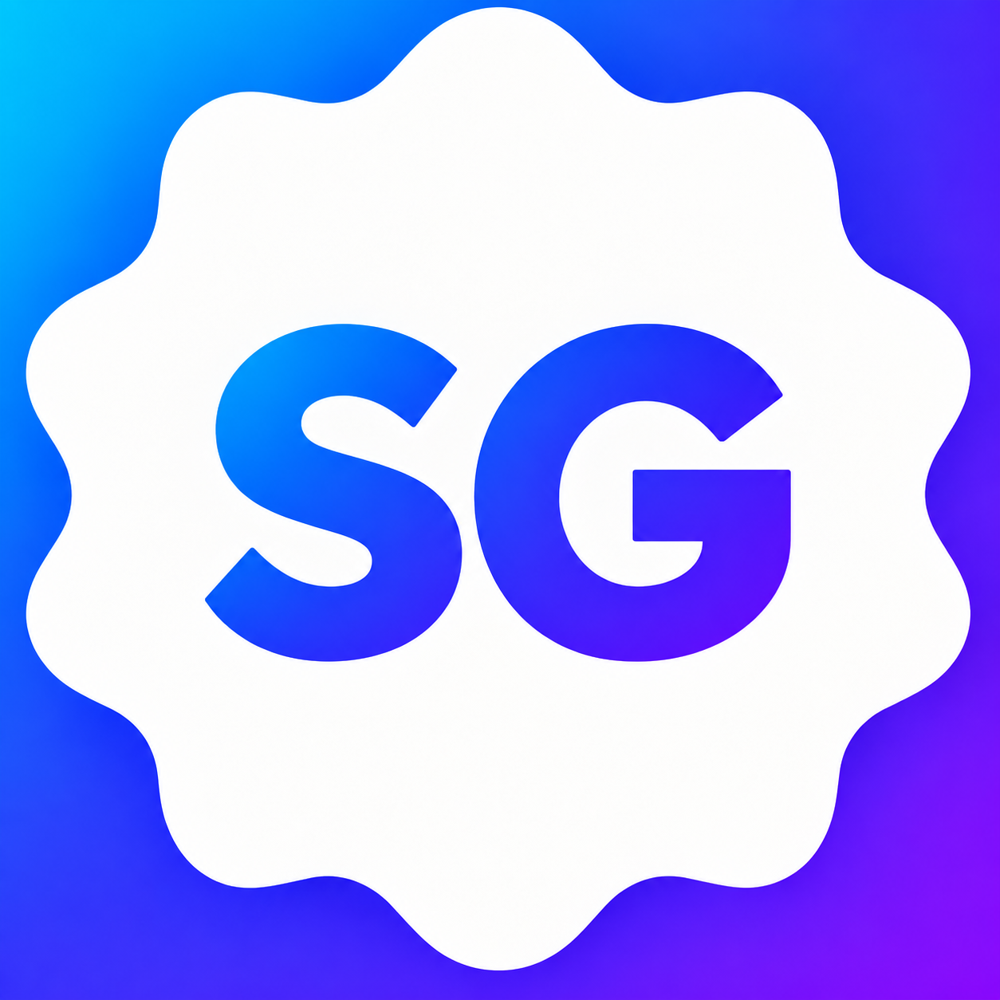

Gamer Verificado
Assinatura ativa e perfil analisado pela equipe.
O selo identifica membros analisados, aumenta a confiança na comunidade e dá prioridade nas áreas de descoberta do Something Gamer.
Carregando sua situação...
Você escolhe a forma disponível no checkout seguro do Mercado Pago. A ativação depende da confirmação do pagamento e da análise do perfil.Cada selo informa algo específico sobre a conta e possui identificação própria.
Assinatura ativa e perfil analisado pela equipe.
Perfil acompanhado oficialmente pela Now Desenvolvimento Tech.

Perfil acompanhado oficialmente pelo Something Gamer.
Azul, roxo, dourado, rosa ou verde. O símbolo e a validação permanecem iguais.
Aparece no perfil, nas publicações, comentários e resultados de busca.
Prioridade responsável na descoberta de gamers e conteúdos da comunidade.
Análise administrativa, assinatura ativa e identificação clara da conta.
Conclua o pagamento no ambiente seguro do Mercado Pago.
O administrador confere se o perfil está completo e em conformidade.
Após aprovação, ele aparece automaticamente enquanto a assinatura estiver ativa.
O selo confirma que o perfil foi analisado pelo Something Gamer. Ele não substitui documento oficial nem certifica identidade civil.